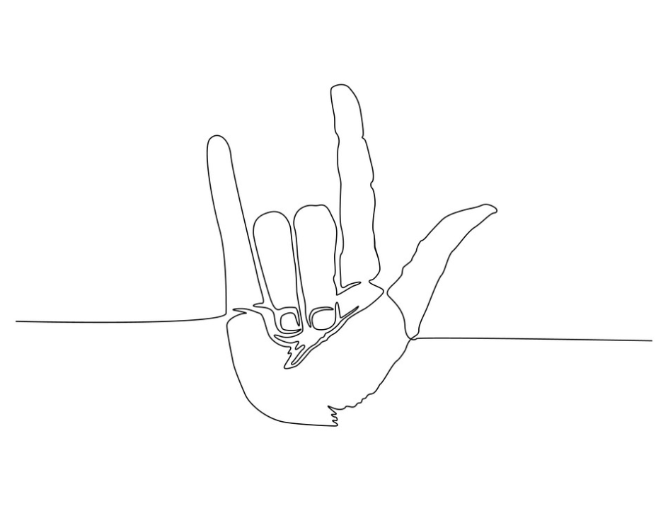

Amante de los animales y de la naturaleza, rockera
Mis objetivos son crecer, crear, trabajar y aprender constantemente.
Anteriormente tenía un trabajo precario en el cual me sentía estancada y no me hacía crecer laboralmente hablando, así que decidí reinventarme y comencé a estudiar desarrollo web en Adalab.
Una vez fianlizado el bootcamp comencé a trabajar en Kairós DS, en la cual llevo 2 años.
Tengo experiencia trabajando con diferentes tecnologías como pueda ser Angular, Polymer, Lit Element... Desde el principio he trabajado con metodologías Agile.
He trabajado para clientes como pueda ser BBVA o Banco Santander.
Desde que comencé en este mundo siempre he tenido mucha curiosidad tanto por la parte de User Experience como la parte de User Interfaz, interesándome por el trabajo de mis compañeros UX/UI. Asi que decidí formarme en Ironhack en este campo para poder tener un perfil mixto y hacer tanto el diseño como el desarrollo de un producto.
Lo que más me gusta de mi trabajo es que cada día aprendo cosas nuevas, es un sector está en costante evolución.